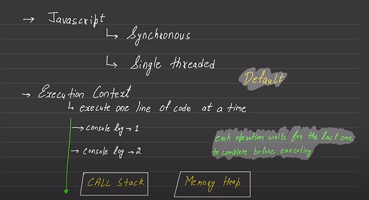
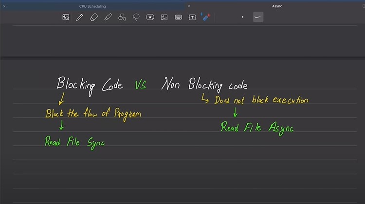
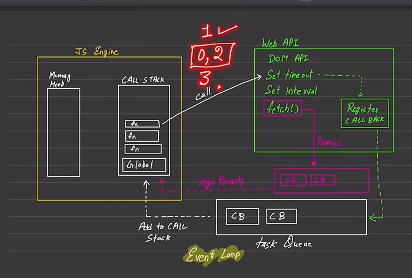

// by default javascript is synchronous in nature\ // js always come with some run time environment so it doesn't let you feel that irts is slow
example" is user writing its data to data base b4 user write data we should not give success message.
 example is i am getting a glass a water but in menwhile u can't do anything synch method blocking code which one is good/bad depends upon sitiation.
js engine is synchronous in nature
web APi is found in browser. node environment in nodejs
task queqe makes the js fast